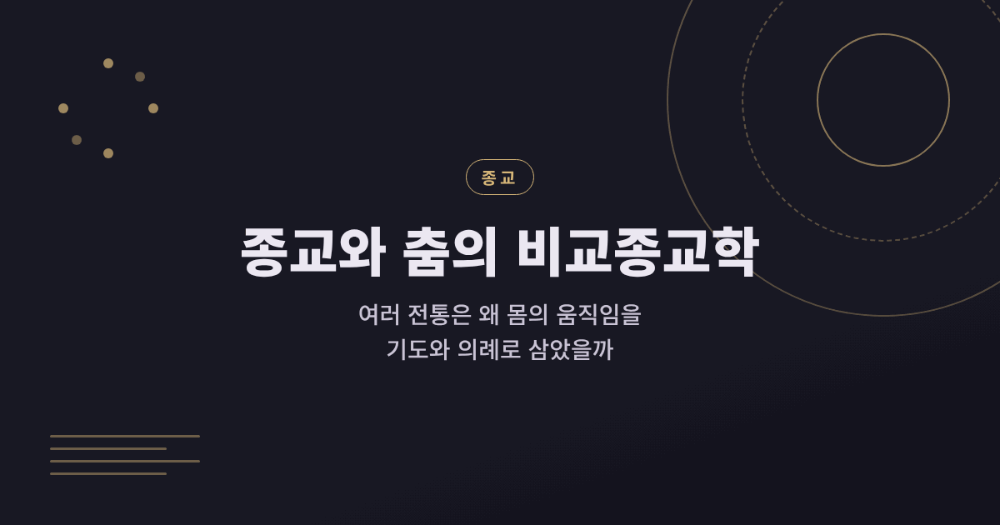
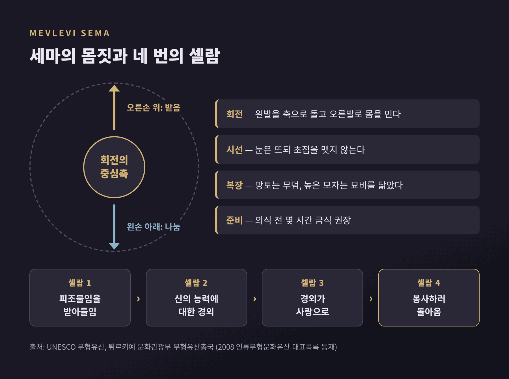
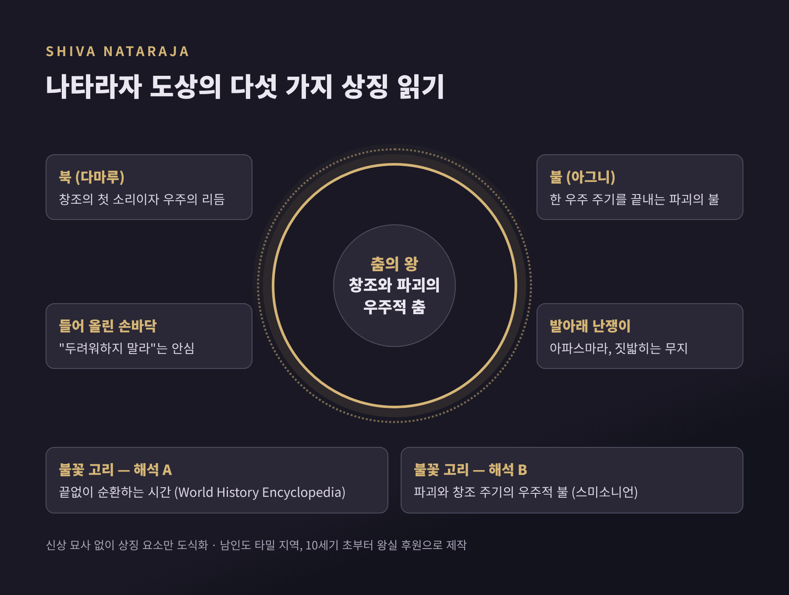
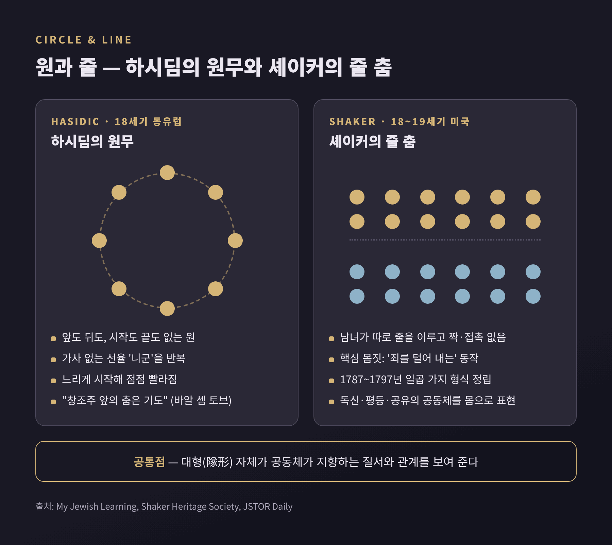
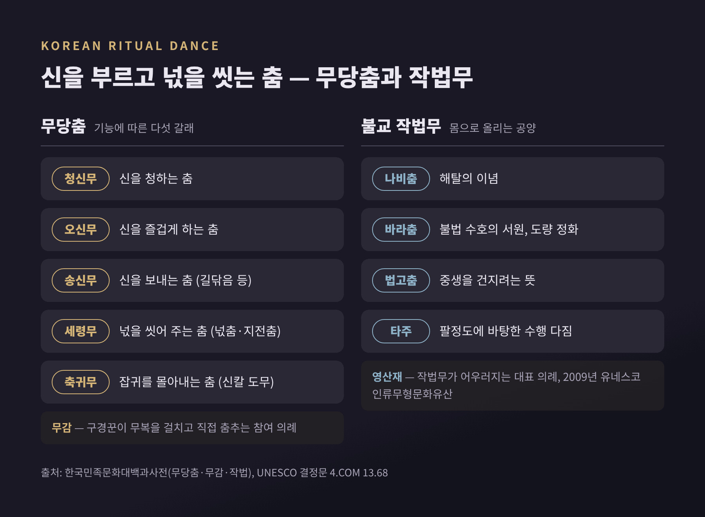
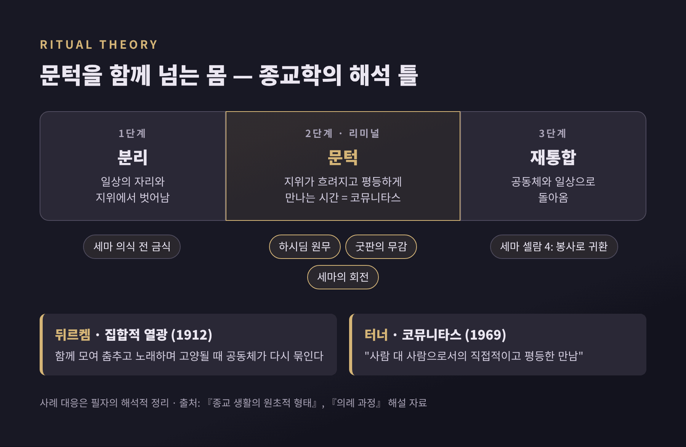

종교와 춤의 비교종교학 — 여러 전통은 왜 몸의 움직임을 기도로 삼았을까

오늘은 종교와 춤의 관계를 비교종교학의 눈으로 살펴보려 합니다. 수피의 회전, 시바의 춤, 하시딤의 원무, 셰이커의 줄 춤, 한국의 굿과 작법무까지 함께 놓고 봅니다. 반대로 춤을 경계한 전통도 나란히 두고, 종교학이 이 현상을 어떻게 설명해 왔는지 정리합니다.
먼저 요약부터 드립니다.
- 많은 종교 전통이 춤을 '몸으로 드리는 기도'로 여겼습니다. 말보다 먼저 몸이 신앙을 표현한다는 생각입니다.
- 같은 전통 안에서도 춤을 경계하는 목소리가 있었습니다. 대개 춤 자체보다 '어떤 춤을, 어떤 맥락에서'가 쟁점이었습니다.
- 종교학은 이를 뒤르켐의 '집합적 열광', 터너의 '코뮤니타스' 같은 틀로 해석합니다. 다만 이 틀은 설명의 한 방식일 뿐, 신앙의 진위를 판단하지는 않습니다.
■ 회전으로 드리는 기도, 메블레비의 세마
튀르키예 콘야에서 시작된 메블레비 교단은 1273년에 성립한 수피 교단입니다. 같은 해 12월 17일, 시인이자 신비가인 메블라나 젤랄렛딘 루미가 세상을 떠났습니다. 교단의 의식 음악은 그의 페르시아어 작품을 주된 원천으로 삼습니다.
이 교단의 '세마'는 흔히 회전춤으로 알려져 있습니다. 유네스코는 2005년 이를 인류 구전·무형유산 걸작으로 선포했고, 2008년 인류무형문화유산 대표목록에 올렸습니다.
동작은 단순해 보입니다. 왼발을 축으로 짧게 비틀고, 오른발로 몸을 밀어 돕니다. 유네스코 설명에 따르면 몸은 유연하게, 눈은 뜨되 초점을 맺지 않아 주변이 흐릿하게 흐르도록 합니다. 의식 전에는 몇 시간 금식이 권장됩니다.
몸의 자세 하나하나에 의미가 실려 있습니다. 튀르키예 문화관광부의 설명은 이렇습니다.
- 오른손바닥은 위로 향해 신의 축복을 받고, 왼손바닥은 아래로 향해 그것을 사람들에게 건넵니다.
- 검은 망토는 무덤을, 높은 모자는 묘비를 닮았습니다. 앉아 있는 상태는 죽음을 뜻합니다.
- 의식은 네 번의 '셀람'으로 이어집니다. 피조물임을 받아들이고, 신의 능력에 경외하고, 그 경외가 사랑으로 바뀐 뒤, 마지막에는 봉사하러 세상으로 돌아옵니다.

마지막 단계가 '돌아옴'이라는 점이 눈길을 끕니다. 황홀경에 머무는 것이 아니라 일상으로 복귀하는 데서 의식이 끝납니다. 과거 수련자는 교단 수도원에서 1,001일을 수련한 뒤 생업과 가정으로 돌아갔다고 합니다.
역사의 굴곡도 있었습니다. 1925년 튀르키예의 세속화 정책으로 모든 메블레비 수도원이 문을 닫았습니다. 약 30년간 비공개로 전해지며 종교적 차원보다 음악 쪽으로 전승이 기울었고, 1950년대에야 공개 공연이 허용되었습니다. 유네스코는 지금 많은 세마가 전통 맥락이 아니라 관광객을 위한 공연으로 열린다는 점을 우려합니다.
■ 우주를 춤추는 신, 나타라자와 사원의 춤
힌두교에는 아예 춤추는 신의 형상이 있습니다. '춤의 왕'이라는 뜻의 시바 나타라자입니다. 남인도 타밀 지역에서 10세기 초부터 왕실 후원 아래 이 형상이 만들어졌고, 촐라 시대에 특히 널리 제작되었습니다.
이 도상은 그 자체로 하나의 우주론입니다. 세계사 백과(World History Encyclopedia)와 스미소니언 아시아미술관 자료를 겹쳐 보면 이렇게 읽힙니다.
- 북(다마루): 창조의 첫 소리이자 리듬
- 불(아그니): 한 우주 주기를 끝내는 파괴의 불
- 들어 올린 손바닥(아바야): "두려워하지 말라"는 안심
- 발아래 난쟁이(아파스마라): 짓밟히는 무지와 환영
- 둘러싼 불꽃 고리: 끝없이 순환하는 시간, 혹은 파괴와 창조의 우주적 불

불꽃 고리의 해석은 자료마다 강조점이 조금 다릅니다. 한쪽은 '시간의 순환'을, 다른 쪽은 '파괴와 창조의 주기'를 앞세웁니다. 서로 배타적이라기보다, 하나의 상징이 여러 겹의 의미를 품는다고 보는 편이 자연스럽습니다.
춤추는 신이 있다면, 신 앞에서 춤추는 사람도 있었습니다. 오늘날 인도 고전무용으로 알려진 바라타나티얌은 19세기 말까지 '사디르'라는 이름으로 사원과 축제에서 데바다시 공동체가 추던 춤이었습니다. 1920~30년대 개혁 운동을 거쳐 1947년 마드라스 데바다시(봉헌 금지)법이 제정되었습니다. 비슷한 시기 루크미니 데비 아룬데일 등이 이 춤을 무대 예술로 다듬어 새 이름으로 알렸습니다.
이 '부흥'을 두고는 평가가 갈립니다. 한쪽은 저속하다고 여겨진 요소를 덜어 낸 정화와 예술화로 봅니다. 다른 쪽, 예컨대 무용가 저스틴 맥카시는 그 과정에서 원래 춤을 추던 여성들이 점점 보이지 않게 되었다고 지적합니다. 그는 영웅과 악당을 가르자는 것이 아니라 역사를 있는 그대로 마주하자고 덧붙입니다.
■ 원과 줄, 하시딤과 셰이커의 춤
유대교 성서에는 유명한 춤 장면이 있습니다. 사무엘하 6장에서 다윗은 법궤를 예루살렘으로 옮기며 "여호와 앞에서 힘을 다하여 춤을" 춥니다. 그런데 이를 창으로 내다본 아내 미갈은 그를 마음속으로 업신여겼다고 기록됩니다. 한 장면 안에 '몸으로 드리는 찬양'과 '체통을 잃은 몸짓'이라는 두 시선이 함께 들어 있는 셈입니다.
18세기 동유럽에서 일어난 하시디즘은 이 전통을 다시 앞으로 끌어냈습니다. 창시자 바알 셈 토브는 "창조주 앞에서 추는 춤은 기도"라고 가르쳤습니다. 그가 즐겨 인용한 구절은 시편 35편 10절, "내 모든 뼈가 이르기를 여호와여 누가 주와 같으리이까"였습니다. 말이 아니라 뼈, 곧 온몸이 기도한다는 생각입니다.
하시딤의 춤은 주로 원을 그립니다. 가사 없는 선율 '니군'을 되풀이하며 느리게 시작해 점점 빨라지고, 때로 몇 시간씩 이어집니다. 마이 주이시 러닝(My Jewish Learning)의 글은 이 원을 이렇게 설명합니다. "모두가 사슬의 고리로서 평등하며, 원에는 앞도 뒤도, 시작도 끝도 없다."
대서양 건너편에도 춤으로 예배한 공동체가 있었습니다. 18세기 중반 영국에서 퀘이커로부터 갈라져 나온 셰이커입니다. 예배 중 몸을 떨며 춤추는 모습에 외부인들이 '흔들리는 퀘이커'라고 조롱했고, 그 별명이 그대로 이름이 되었습니다. 앤 리가 이끈 첫 무리는 1774년 8월 미국에 도착했습니다.
셰이커의 춤은 시간이 흐르며 성격이 크게 바뀌었습니다. 초기에는 회전하고 쓰러지고 경련하는, 정해진 형식이 없는 춤이었습니다. 1781년의 한 기록은 "정확한 형식을 짚어 낼 수 없다"고 적었습니다. 그러나 1784년 앤 리가 세상을 떠난 뒤에는 남녀가 따로 줄과 원을 이루어, 짝 없이 접촉 없이 움직이는 '노동(laboring)' 춤이 자리 잡았습니다. 1787년부터 10년 사이 일곱 가지 춤 형식이 정해졌고, 핵심 몸짓은 '죄를 털어 내는' 동작이었습니다.
짝이 없다는 점은 우연이 아닙니다. 셰이커는 독신과 남녀평등, 재산 공유를 핵심 원칙으로 삼았고, 춤은 그 공동체 이상을 몸으로 보여 주는 장치였습니다. 19세기 중반 전성기에는 수천 명에 이르렀으나(자료에 따라 약 4,000~6,000명), 지금은 메인주 사바스데이 레이크 한 곳만 남아 있습니다.

■ 신을 부르고 넋을 씻는 춤, 굿과 작법무
한국에서도 춤은 의례의 중심에 있었습니다. 한국민족문화대백과사전은 무당춤을 "한국 전통춤 전반의 뿌리"라고까지 설명합니다.
무당춤은 크게 두 결로 나뉩니다. 신이 내려 신의 역할을 직접 하는 강신무의 춤은 활달하고 주술성이 강합니다. 배움으로 의례를 익힌 세습무의 춤은 부드럽고 축원적입니다. 흥미로운 것은 춤사위 자체보다 굿거리의 목적과 무구의 쓰임이 춤의 의미를 정한다는 점입니다. 기능에 따라 보면 다섯 갈래가 됩니다.
- 청신무: 신을 청하는 춤
- 오신무: 신을 즐겁게 하는 춤
- 송신무: 신을 보내는 춤 (망자를 보내는 '길닦음' 등)
- 세령무: 넋을 씻어 주는 춤 (넋춤, 지전춤 등)
- 축귀무: 잡귀를 몰아내는 춤 (신칼을 휘두르는 도무 등)
굿판에는 구경꾼이 직접 춤추는 순서도 있습니다. '무감'이라 부르는데, 굿이 몇 거리 진행된 뒤 구경하던 이들이 무복을 걸치고 무악에 맞춰 춤을 춥니다. 그렇게 하면 한 해 동안 병 없이 복을 받는다고 믿었습니다. 평소 쌓인 갈등과 슬픔을 풀어내는 자리이기도 했고, 주로 여성들이 참여했습니다. 때로는 무당보다 더 격렬하게 춤추다 신들린 상태에 이르는 사람도 있었다고 합니다.
불교 의례의 춤은 결이 다릅니다. 재를 올릴 때 추는 춤을 통틀어 '작법'이라 합니다. 범패가 목소리로 부처께 공양하는 것이라면, 작법은 몸동작으로 올리는 공양입니다.
- 나비춤: 해탈의 이념
- 바라춤: 불법을 지키고 펼치려는 서원, 도량을 정화하는 의미
- 법고춤: 중생을 건지려는 뜻
- 타주: 팔정도에 바탕한 수행의 다짐
이 춤들이 어우러지는 대표적 의례가 영산재입니다. 석가모니가 영취산에서 법화경을 설하던 장면을 재현하는 의례로, 2009년 유네스코 인류무형문화유산에 올랐습니다.

■ 춤을 경계한 전통들
여기까지 보면 종교는 늘 춤을 반긴 것처럼 보입니다. 그렇지 않습니다. 같은 종교 안에서도 춤을 경계하거나 제한한 흐름이 분명히 있었습니다.
| 전통 | 경계의 내용 | 쟁점의 핵심 |
|---|---|---|
| 일부 이슬람 법학자 | 이븐 타이미야 등은 음악 청취(사마)에 폭넓게 반대 | 음악·춤이 신이 원하는 앎과 상태를 주는가 |
| 이슬람 내 허용론 | 알가잘리는 원칙적 허용, 상황과 청자의 성품에 따라 사안별 판단 | 맥락과 의도 |
| 칼뱅 시대 제네바 | 춤을 도박·음주와 함께 금지, 견책·벌금·투옥 | 방종과 공동체 규율 |
| 청교도 뉴잉글랜드 | 인크리스 매더의 1684년 소책자가 '남녀가 섞여 추는 춤'을 비판 | 성적 문란에 대한 우려 |
이슬람의 경우를 단순화하기는 어렵습니다. 2023년 학술지 Religions에 실린 오마르 파라핫의 연구는 사마를 두고 법학자들의 입장이 넓은 스펙트럼에 걸쳐 있었다고 정리합니다. 수피 전통은 음악과 춤을 수행으로 삼았고, 일부 법학자는 이를 경계했습니다. 어느 한쪽만이 '이슬람의 입장'이라고 말하기는 어렵습니다.
청교도의 경우도 범위를 두고 해석이 갈립니다. 인크리스 매더의 주된 표적은 남녀가 함께 추는 춤이었습니다. 이후 보스턴의 무용 교사들이 '남녀 반을 따로 가르친다'고 광고한 것도 그 영향으로 읽힙니다. 다만 그의 논거가 춤 전반으로 확장될 여지도 있어, 모든 춤을 금했는지는 단정하기 어렵습니다.
결국 경계의 대상은 대개 춤 그 자체보다 그것이 불러올 수 있는 방종, 성적 긴장, 신앙의 산만함이었습니다. 춤을 기도로 본 전통과 춤을 경계한 전통은 생각보다 같은 질문을 붙들고 있었습니다. 몸의 힘이 그만큼 강하다는 인식입니다.
■ 종교학은 이 현상을 어떻게 설명할까
종교학이 즐겨 쓰는 첫 번째 틀은 에밀 뒤르켐의 '집합적 열광'입니다. 그는 1912년 『종교 생활의 원초적 형태』에서 오스트레일리아 원주민 사회를 사례로 들었습니다. 사람들이 주기적으로 모여 먹고 춤추고 노래하며 고양된 상태에 이르고, 그 순간 집단의 힘에 사로잡힌다는 설명입니다. 뒤르켐은 이 경험이 공동체를 다시 묶어 준다고 보았습니다.
두 번째 틀은 빅터 터너의 '코뮤니타스'입니다. 터너는 1969년 『의례 과정』에서 통과의례를 분리, 문턱(리미널), 재통합의 세 단계로 보았습니다. 문턱의 시간에는 평소의 지위가 흐려지고, 사람들은 "사람 대 사람으로서 직접적이고 평등하게" 만납니다. 이 상태가 코뮤니타스입니다.

이 틀을 대입해 보면 흥미로운 대응이 보입니다. 앞도 뒤도 없는 하시딤의 원은 코뮤니타스의 평등을 닮았습니다. 구경꾼이 무복을 걸치고 춤추는 무감은 관객이 참여자로 넘어가는 문턱의 순간입니다. 세마의 네 번째 셀람이 '봉사하러 돌아옴'으로 끝나는 것은 재통합 단계와 겹쳐 보입니다.
실험 연구도 일부 참고가 됩니다. 2015년 Biology Letters에 실린 타르·던바 등의 연구는, 박자를 맞춰 함께 움직이는 것과 몸을 힘껏 쓰는 것이 각각 독립적으로 통증 역치와 집단 유대감을 높였다고 보고했습니다. 함께 추는 춤이 사람을 묶는다는 직관에 한 가지 근거를 더한 셈입니다.
물론 한계도 분명합니다. 뒤르켐의 설명은 종교를 사회의 표현으로 환원한다는 비판을 받아 왔습니다. 초월을 향한 인간의 갈망이 부족이나 집단의 차원에 다 담기지 않는다는 반론입니다. 이런 해석 틀은 '왜 사람들이 함께 춤추면 결속하는가'를 설명할 뿐, 그 춤이 향하는 대상의 진실 여부에 대해서는 말하지 않습니다. 종교학의 설명과 신앙인의 체험은 서로 다른 층위에 있습니다.
정리하면 이렇습니다.
예전에는 춤을 종교의 장식이나 여흥쯤으로 보기 쉬웠습니다. 여러 전통을 나란히 놓고 보면 사정이 다릅니다. 춤은 교리를 몸으로 번역하고, 개인을 공동체로 묶고, 일상과 성스러움 사이의 문턱을 넘게 하는 장치였습니다. 그 힘이 컸기에 어떤 전통은 춤을 기도로 삼았고, 어떤 전통은 조심스럽게 울타리를 쳤습니다.
"종교의 춤은 몸이 먼저 드리는 기도이자, 공동체가 함께 넘는 문턱이었습니다."
다음에 어느 의례에서 회전하는 사람, 원을 그리는 사람, 북소리에 맞춰 뛰는 사람을 보게 되신다면, 그 동작 하나하나에 오래된 질문이 실려 있다는 것을 떠올려 보셔도 좋겠습니다. 몸은 왜 기도하는가 — 그 질문에 인류는 지금도 저마다의 방식으로 답하는 중입니다.
참고 자료: 유네스코 무형유산(메블레비 세마, 영산재 결정문), 튀르키예 문화관광부, 스미소니언 아시아미술관, World History Encyclopedia, UPenn CASI, My Jewish Learning, Shaker Museum·Shaker Heritage Society, JSTOR Daily, 한국민족문화대백과사전(무당춤·무감·작법), Farahat(2023, Religions), Commonplace, Encyclopedia.com(Victor Turner), Tarr 외(2015, Biology Letters)
#종교와춤 #비교종교학 #세마 #나타라자 #하시디즘 #셰이커 #무당춤 #작법무 #집합적열광 #코뮤니타스